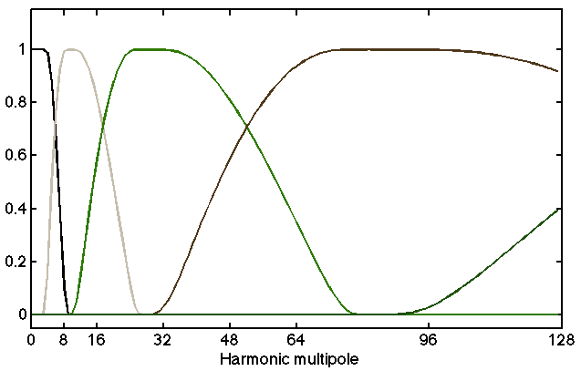
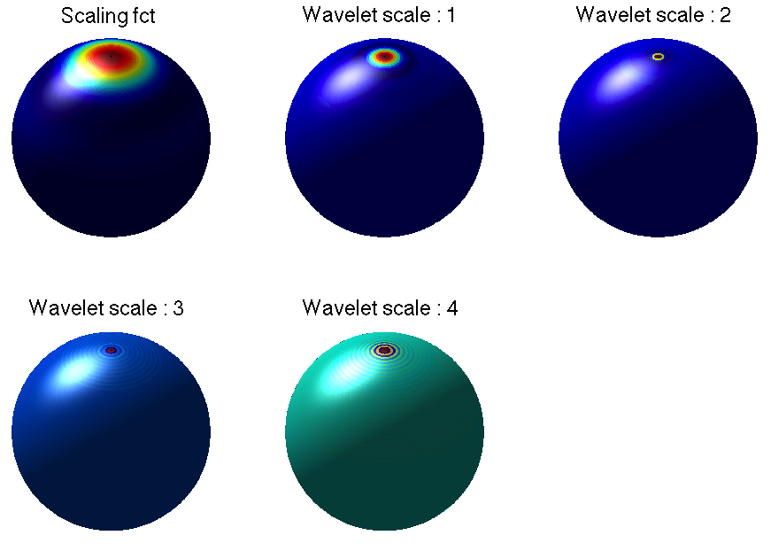
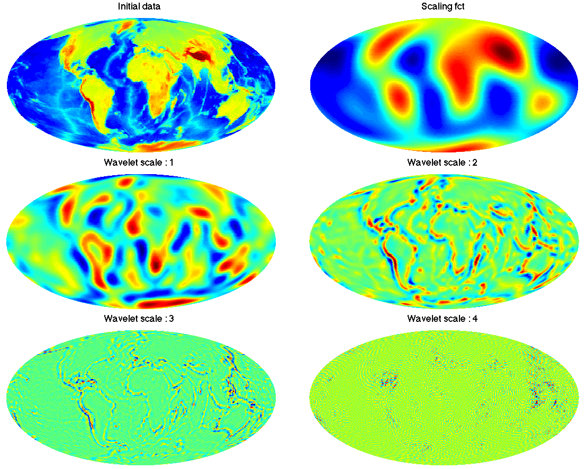
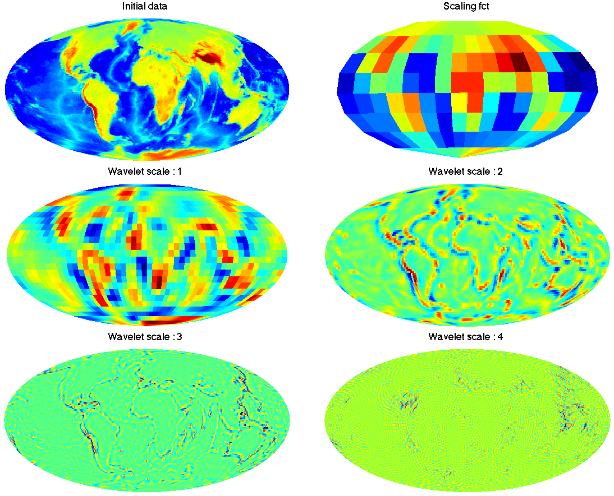
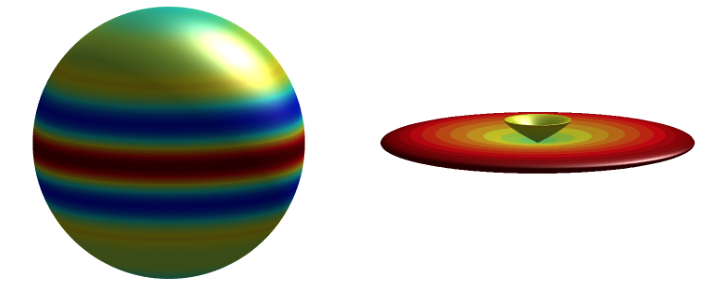
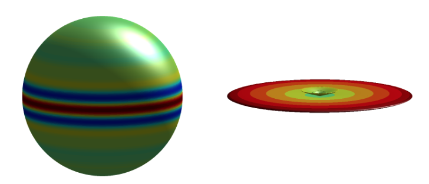
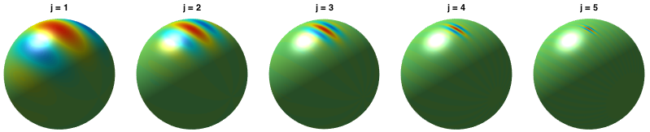

Description
The S2LET code provides functionality to compute fast wavelet transforms of signals on the sphere. It uses the SSHT and SO3 codes to compute fast and exact spherical harmonic and Wigner transforms. The resulting wavelet transform is theoretically exact, i.e. wavelet coefficients capture all information of a band-limited signal and the original signal can be recovered exactly from its wavelet coefficients. S2LET also supports the HEALPix sampling scheme, in which case the transforms are not theoretically exact but achieve good numerical accuracy.
This documentation describes installation details and documents the source code. Reference, author and license information is also given. The code itself is hosted on GitHub.
Scale discretised wavelets on the sphere
S2LET supports scale-discretised axisymmetric and directional wavelets (Wiaux et al. 2008, Leisted et al. 2012, McEwen et al. 2018), spin wavelets (McEwen et al. 2015), ridgelets (McEwen & Price 2019), and curvelets (Chan et al. 2017).
Fast and exact algorithms are implemented to compute forward and inverse wavelet transforms by leveraging fast and exact algorithms to compute harmonic transforms on the sphere (McEwen & Wiaux 2011) and rotation group (McEwen et al. 2015), implemented in the SSHT and SO3 codes, respectively.
Scale-discretised wavelets are constructed through an exact tiling of harmonic space. The harmonic line is tiled into wavelet kernels which are localised in both real and frequency spaces, as shown on the image below for a particular set of wavelet parameters (B=2, J_min=2, harmonic space on the left, corresponding kernels on the right).
 
Scale-discretised wavelets on the sphere satisfy excellent spatial localisation and asymptotic correlation properties , as shown in McEwen et al. (2018).
A band-limited signal may be decomposed into a set of wavelet maps that exactly capture all the information content of the original signal. The original signal may then be synthesised exactly from its wavelet coefficients (at machine precision). Due to the nature of the tiling in harmonic space, the individual wavelet maps have different band-limits and hence can be reconstructed at different resolutions, i.e. with the minimal number of samples. The left and right panels below are the wavelet decomposition of Earth tomography data at full (left) and multi-resolution (right). Due to the exactness of all transforms, these two approaches are equivalent and capture all the information contained in the initial band-limited map.
 
When using HEALPix instead of the sampling on the sphere of McEwen & Wiaux (2011), the harmonic transform is not exact and hence the corresponding wavelet transform performed by S2LET is only exact in harmonic space. In other words, a set of spherical harmonic coefficients may be projected onto wavelets exactly in harmonic spaces but the HEALPix maps don't capture all the information contained in these coefficients. However good numerical accuracy is achieved in a wide range of situations.
Spin wavelets
The framework of scale-discretised wavelets was extended in McEwen et al. (2015) to support spin signals. The figure below shows the real, imaginary and absolute part of a spin wavelet.

Ridgelets
S2LET supports the spherical ridgelet transform developed in McEwen & Price (2019). The ridgelet transform is defined natively on the sphere, probes signal content globally along great circles, does not exhibit any blocking artefactes, does not rely on any ad hoc parameters, and permits the exact inversion for antipodal signals. The figure below shows spherical ridgelets, with axis aligned with the North pole, for wavelet scales j=3 and 4, plotted on the sphere and parametrically.
 
Curvelets
S2LET also supports scale-discretised curvelets, as developed in Chan (2017), which are efficient for representing local linear and curvilinear structure and admit exact inversion for both scalar and spin signals. The figure below shows spherical curvelets, with axis aligned with the North pole, for various wavelet scales j, plotted on the sphere.

Installation
The S2LET package in based on a core C implementation. Python, Matlab and IDL interfaces to the C implementation are provided.
Dependencies
S2LET requires the SSHT, SO3, and FFTW libraries. The IO FITS features require CFITSIO. To support HEALPix, a valid installation of its Fortran implementation must be provided.
Python installation
The python package, pys2let, is available on pypi and can be installed with:
pip install pys2let
The python package is backed by scikit-build and CMake. It will install a local version of FFTW and will compile its own version of the C package.
Alternatively, the python package can be installed from a local clone of the repository for development purposes by
pip install -e .[dev]
C installation
The C package can be installed with CMake and conan.Both can be installed using pip:
pip install conan cmake
Then S2LET can be compiled with:
git clone https://github.com/astro-informatics/s2let.git mkdir s2let/build && cd s2let/build cmake -DCMAKE_BUILD_TYPE=Release -DCMAKE_INSTALL_PREFIX=/usr/local -Dconan_deps=ON -Dcfitsio=ON .. make make install
The above will also download FFTW, SSHT and SO3, if necessary.
Matlab installation
The Matlab interface requires the C version to be installed.
It can be built using make by configuring appropriate compilers and dependencies, and then running:
make matlab
IDL installation
The IDL interface requires the dynamic C library to first be built using make. The variable S2LET must then be defined in Bash/Shell and point to the root of the S2LET directory so that IDL can find the dynamic library.
Source code documentation
S2LET code is self documented. Source code documentation for each language is available here:
- Python source documentation (usage for the python package is given in the package docstring)
- C source documentation
- Matlab source documentation (usage for the matlab package is available through matlab help documentation)
- IDL source documentation
Referencing
If you use S2LET for work that results in publication, please reference https://github.com/astro-informatics/s2let/ and cite the relevant academic paper(s):
Y. Wiaux, J. D. McEwen, P. Vandergheynst, O. Blanc, Exact reconstruction with directional wavelets on the sphere, Mon. Not. Roy. Astron. Soc., 388(2):770-788, 2008. (ArXiv | DOI).
B. Leistedt, J. D. McEwen, P. Vandergheynst and Y. Wiaux, S2LET: A code to perform fast wavelet analysis on the sphere, Astronomy & Astrophysics, 558(A128):1-9, 2013 (ArXiv | DOI).
J. D. McEwen, B. Leistedt, M. Büttner, H. V. Peiris, Y. Wiaux, Directional spin wavelets on the sphere, IEEE Trans. Signal Proc., submitted, 2015 (ArXiv).
J. D. McEwen, M. Price, Ridgelet transform on the sphere, 27th European Signal Processing Conference (EUSIPCO), 2019 (ArXiv | DOI).
J. Y. H. Chan, B. Leistedt, T. D. Kitching, J. D. McEwen, Second-generation curvelets on the sphere, IEEE Trans. Signal Proc., 65(1):5-14, 2017 (ArXiv | DOI).
J. D. McEwen, C. Durastanti, Y. Wiaux, Localisation of directional scale-discretised wavelets on the sphere, Applied Comput. Harm. Anal., 44(1), 59-88, 2018 (ArXiv | DOI).
You may also like to consider citing the following papers on which the fast algorithms of S2LET are based:
J. D. McEwen, M. Büttner, B. Leistedt, H. V. Peiris, Y. Wiaux, A novel sampling theorem on the rotation group, IEEE Sig. Proc. Let., 22(12):2425-2429, 2015 (ArXiv | DOI).
J. D. McEwen and Y. Wiaux, A novel sampling theorem on the sphere, IEEE Trans. Signal Proc., 59, 5876-5887, 2011 (ArXiv | DOI).
License
S2LET package to perform fast wavelet transform on the sphere
Copyright (C) 2012- Boris Leistedt, Jason McEwen, Martin Büttner and contributorsThis program is free software; you can redistribute it and/or modify it under the terms of the GNU General Public License as published by the Free Software Foundation; either version 3 of the License, or (at your option) any later version.
This program is distributed in the hope that it will be useful, but WITHOUT ANY WARRANTY; without even the implied warranty of MERCHANTABILITY or FITNESS FOR A PARTICULAR PURPOSE. See the GNU General Public License for more details (License.txt).
You should have received a copy of the GNU General Public License along with this program. If not, see https://www.gnu.org/licenses/.
Authors
S2LET was initially developed by Boris Leistedt, Martin Büttner, and Jason McEwen but significant contributors have since been made by a number of others.